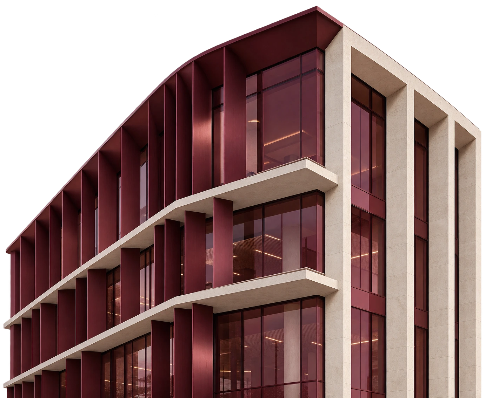
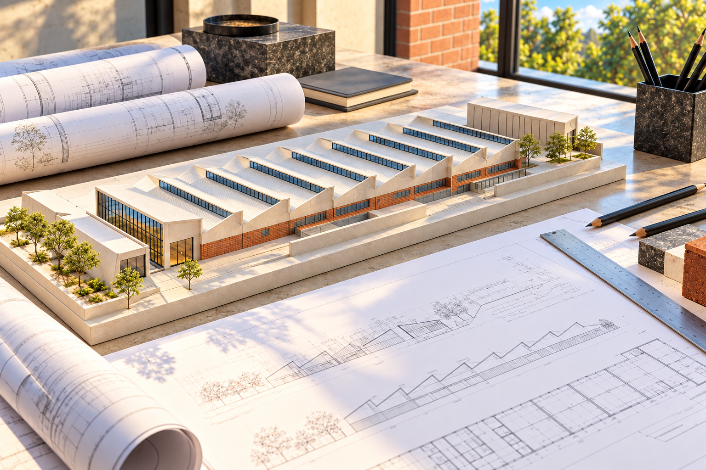
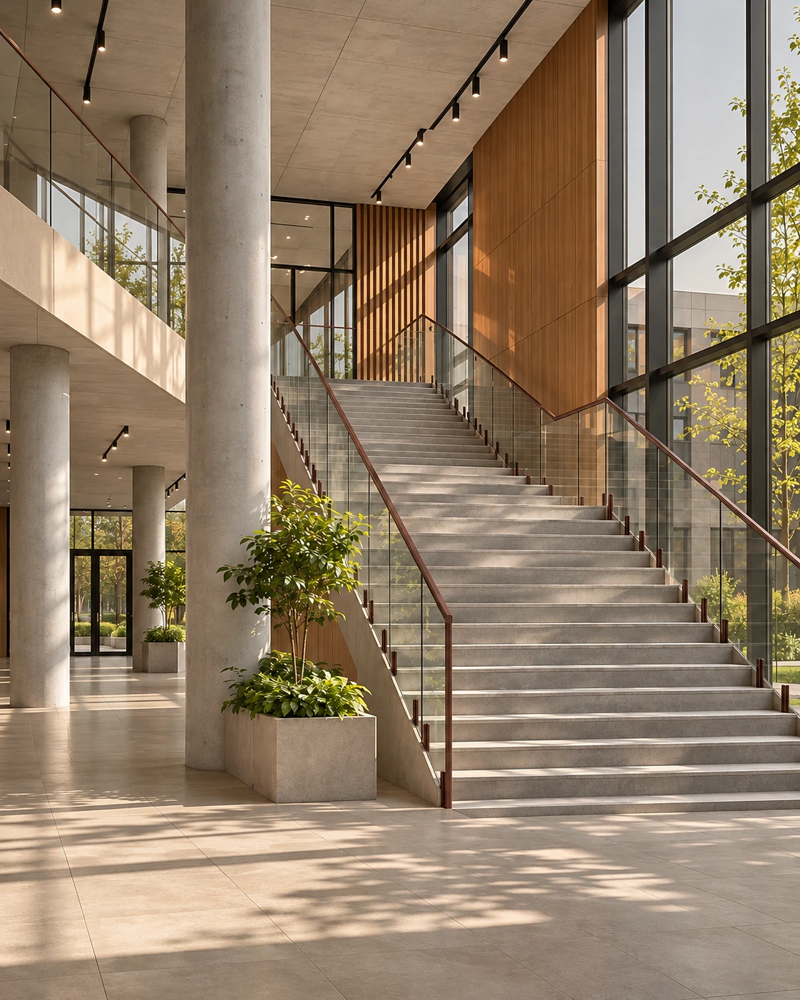
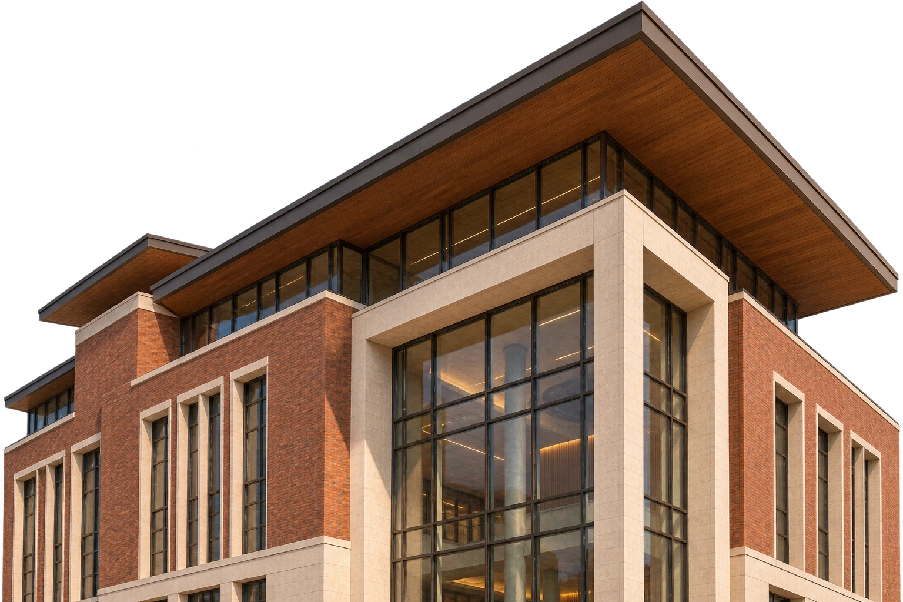
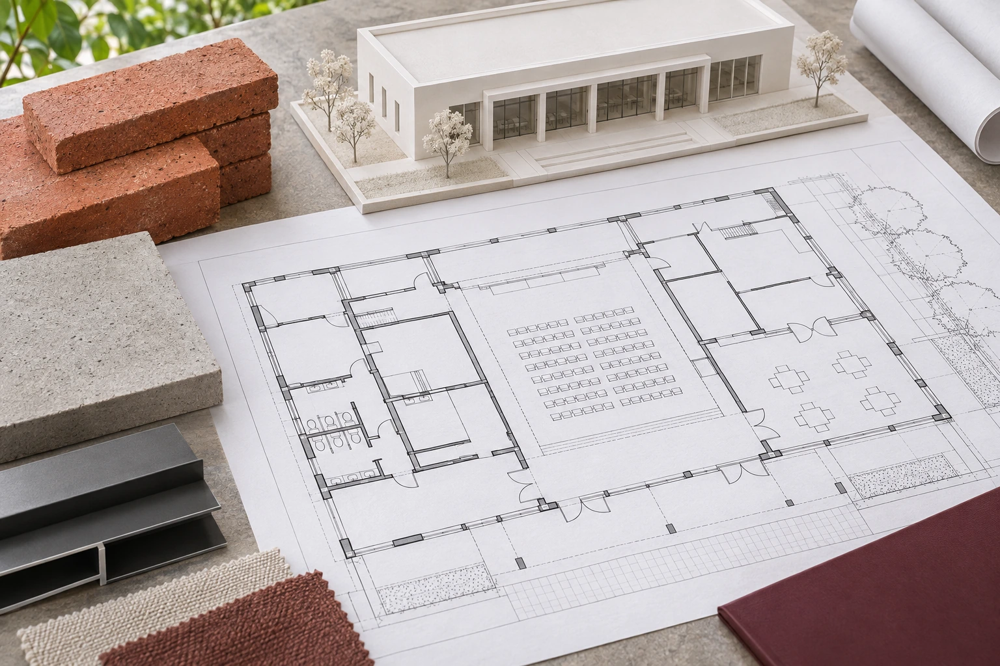
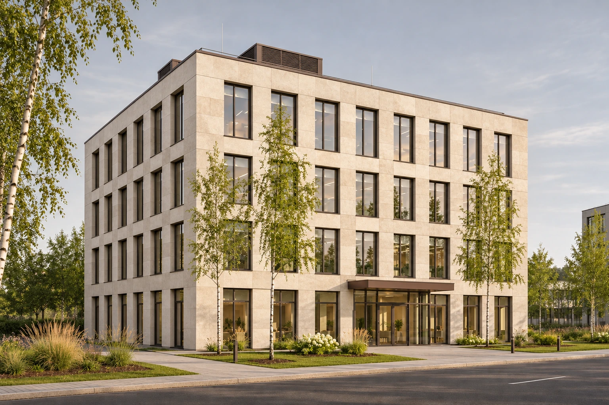

Новое строительство
Нужно определить решения по будущему зданию и подготовить документацию.
Архитектура, конструкции, инженерные системы
Подготовим проектную и рабочую документацию с учётом назначения здания, условий площадки и Ваших требований. Увяжем архитектуру, конструкции и инженерные системы.
Проект целиком или отдельные разделы.

Проектирование
Нужно определить решения по будущему зданию и подготовить документацию.
Требуется проработать изменения с учётом существующего объекта.
Не хватает документации или нужно согласовать изменения с уже принятыми решениями.


Состав работ
Планировку, объём и внешний вид здания с учётом назначения и требований заказчика.
Схему конструкций и предусмотренные заданием расчёты.
Состав систем и их согласование с архитектурой, конструкциями и другими разделами проекта.

Проектные материалы, рабочие чертежи, узлы и спецификации в согласованном составе.
Сначала определяем задачу и исходные данные. По ним согласуем состав разделов и глубину проработки. Сопровождение рассмотрения документации в экспертизе обсуждаем отдельно.
Первый этап
Обсуждаем назначение здания, площади, использование и имеющиеся ограничения.

Второй этап
Определяем исходные данные, состав разделов, этапы и основные решения.
Третий этап
Готовим решения и согласуем их между разделами.

Четвёртый этап
Проверяем состав результата и сопровождаем рассмотрение, если это включено в работу.
Перед первым обращением
Если Вашей ситуации здесь нет, обсудим её отдельно.
Да, после проверки исходных материалов и смежной документации. Нужно понять, как новый раздел будет связан с остальным проектом и кто отвечает за согласование решений.
Проектная документация описывает основные решения по объекту. Рабочая подробнее раскрывает их в чертежах, узлах и спецификациях для выполнения работ. Нужный состав определяем по задаче и особенностям объекта.
Начнём с описания того, что Вы планируете построить или изменить. Изучим имеющиеся материалы и уточним, что потребуется для разработки задания и документации.
Начнём с Вашей задачи
Расскажите, что планируете построить или изменить. Приложите исходные материалы, если они есть. Мы уточним требования и предложим состав проектных работ.